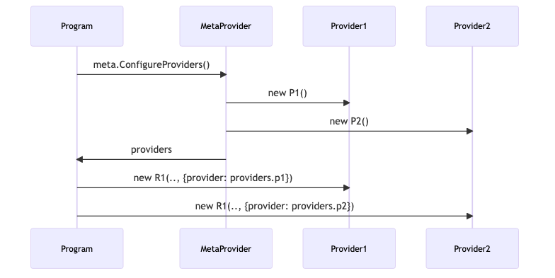

One of our top customers has a pain point:
What about a provider factory?

Not so fast, there is a pesky problem of pulumi/pulumi#7012
The metaprovider returns an Output and the user program cannot unwrap it easily to configure resources
The general problem of Output<Provider> turns out to be pretty difficult
Luckily there is a simple way to special-case code generation for resource methods
Extend Pulumi Package Schema with a new option for methods, XReturnPlainResource
This is what our TypeScript users will get:
This is what our Go users will get:
The meta-provider needs to simply implement methods for each provider that return a 1-arg struct:
100s of lines of configuraiton move to 1 lang, 1 file
Write once consume anywhere (Go, TypeScript, etc)
Updates done in one place, easier to manage
You can check the prototype at https://github.com/t0yv0/pulumi-12709
Thanks Levi, Justin and Fraser for early design feedback
The work continues to finalize the design and get it working for Python, YAML, and ultimately help our customer simplify their codebase